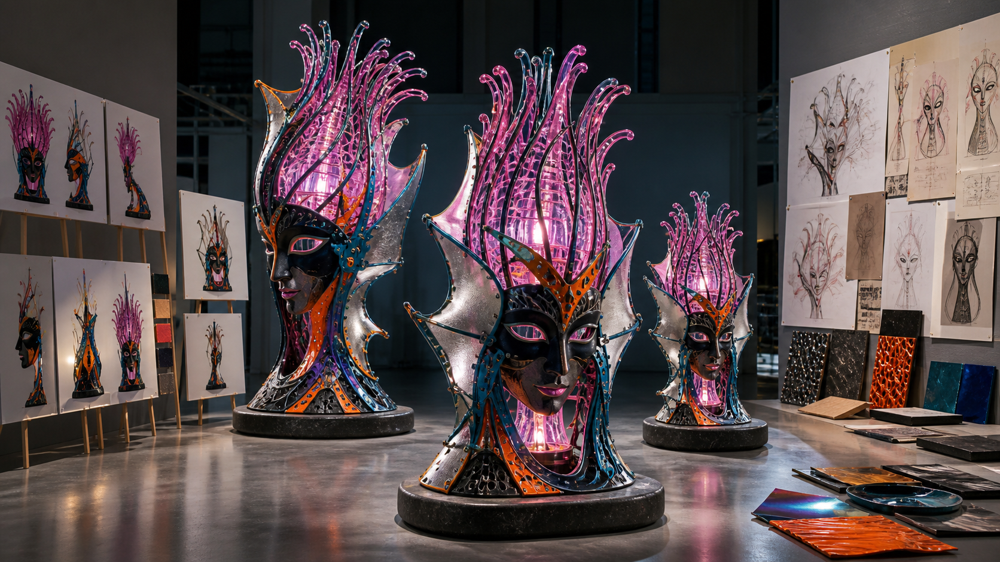
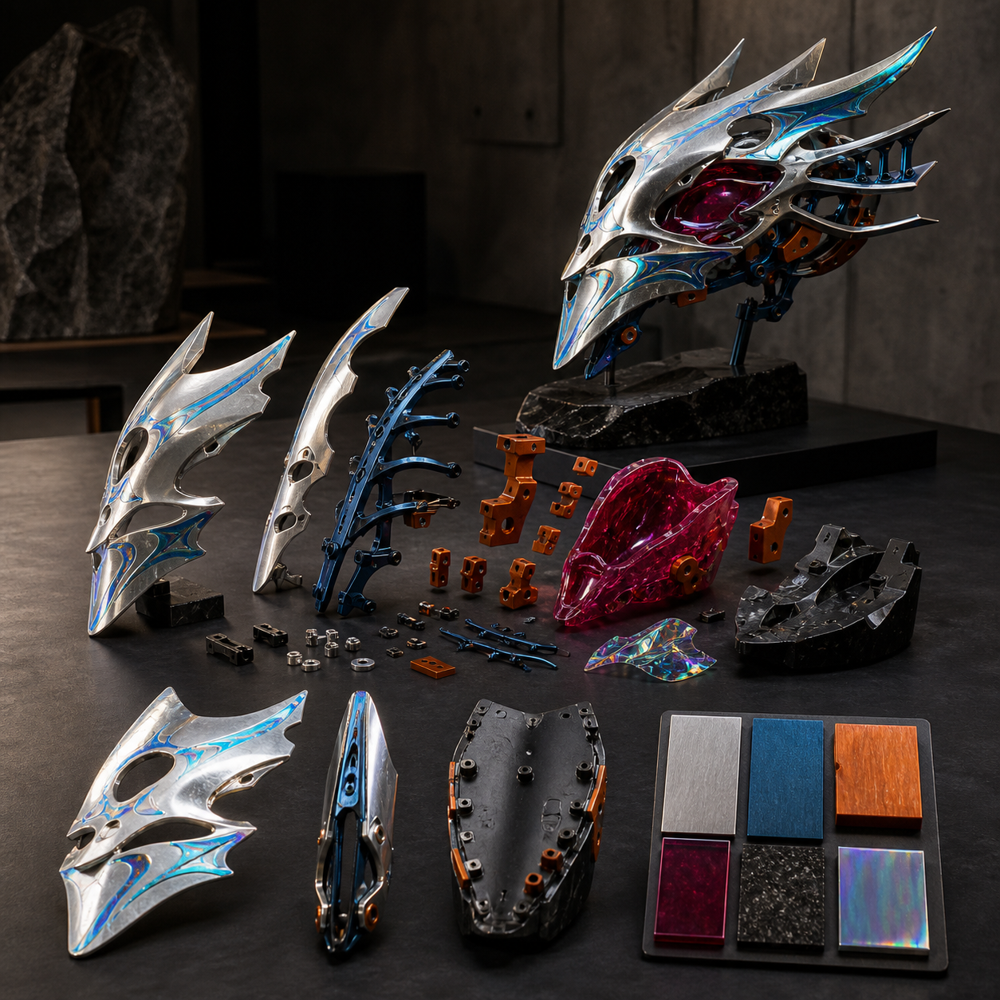
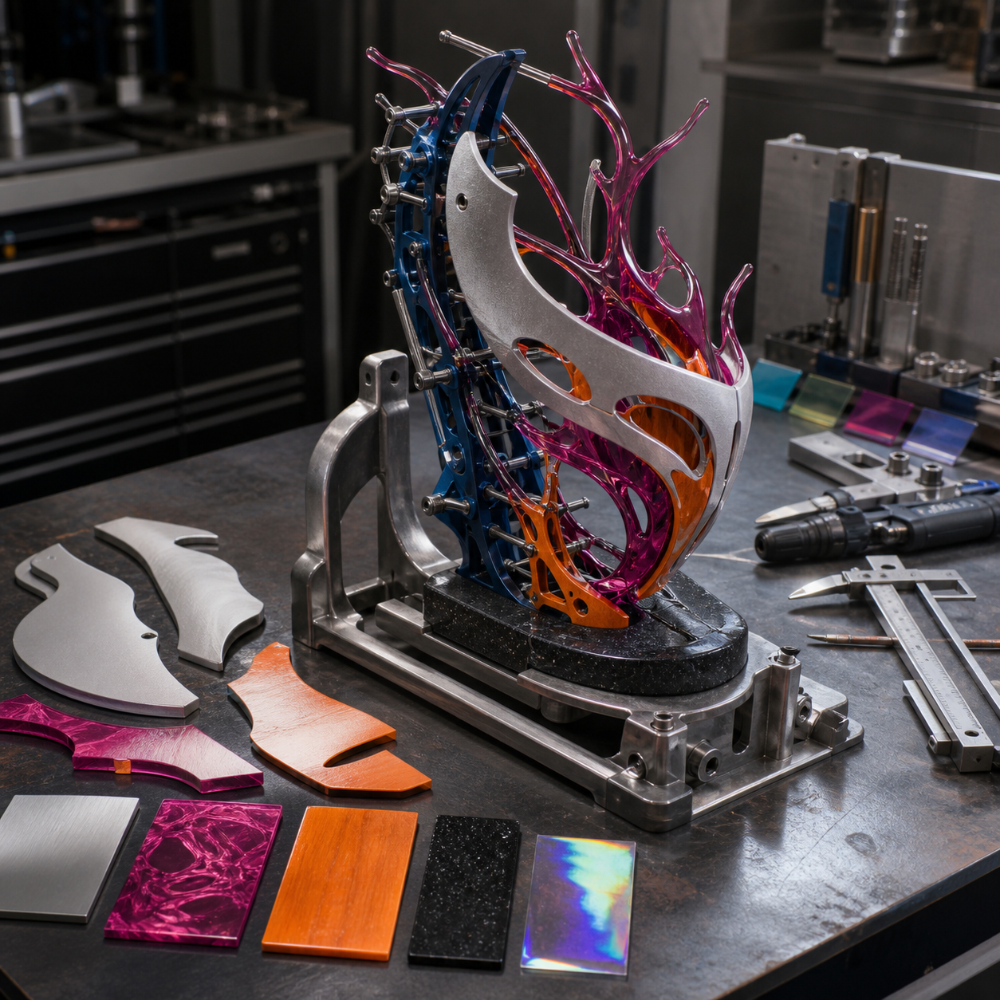
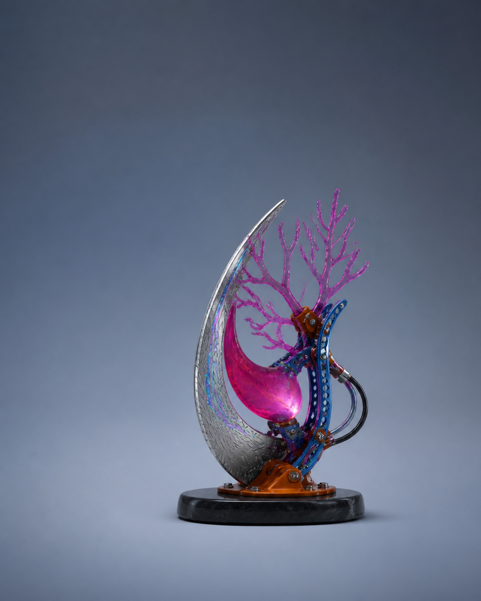

AI 视觉输入图，为什么要准备正侧背和材质
AI 视觉输入图如果只有一个正面视角，三维阶段就必须猜测侧面的厚度、背部的连接、遮挡后的体块和底部的落点。正面轮廓即使很完整，也不能说明鼻、冠部、翼片、衣褶或配件究竟向前突出多少，更不能证明对象转到侧后方仍保持同一身份。 材质信息缺失会带来另一类误判。同一块深色区域可能是涂装分色、透明件、金属嵌片、织物表皮或结构凹槽；如果没有材质与表面说明，初模容易把颜色误做成体积，或把需要独立分件的部位并入主体。缺失会延续到人工修模、拆件、支撑与打印检查，增加返工并削弱角色辨识度。

具体问题
AI 视觉输入图如果只有一个正面视角，三维阶段就必须猜测侧面的厚度、背部的连接、遮挡后的体块和底部的落点。正面轮廓即使很完整，也不能说明鼻、冠部、翼片、衣褶或配件究竟向前突出多少，更不能证明对象转到侧后方仍保持同一身份。
材质信息缺失会带来另一类误判。同一块深色区域可能是涂装分色、透明件、金属嵌片、织物表皮或结构凹槽；如果没有材质与表面说明，初模容易把颜色误做成体积，或把需要独立分件的部位并入主体。缺失会延续到人工修模、拆件、支撑与打印检查，增加返工并削弱角色辨识度。
核心判断
正面、侧面、背面和材质不是为了把输入图数量做多，而是分别消除不同的不确定性。正面负责主要比例与识别轮廓，侧面负责前后体积、厚度和重心，背面负责后侧结构、连接与被遮挡区域，材质说明负责把颜色、纹样和反光转换为可制造的表面或独立部件。
一组输入是否可用，要看各视图能否在关键位置互相对应：同一特征在各视图中的高度、宽度与连接点是否一致，左右不对称是否有明确说明，遮挡处是否有补充，材料选择是否匹配目标尺寸和工艺。遇到冲突时应先记录并修正，不让三维生成工具替代事实判断。
步骤或标准
可用下面六项检查视觉输入。每一项都应留下可见视图、标记或材料决定，并能由另一人复核。
- 建立正面基准：固定整体高度、肩宽或主体宽度、中心线、主要负形和左右不对称特征；检查核心辨识点没有被透视或姿态遮住。
- 补齐侧面体积：标出头部、躯干、底座和配件的前后厚度、最高突出点与重心投影；检查细长部位在真实尺寸下是否需要加厚或贴近主体。
- 解释背面与遮挡：补出后脑、背部、衣物、尾部、接口和底面；对正面不可见的连接位置明确采用连续体、插接、磁吸预留或独立分件中的哪一种方向。
- 制作材质板：为主色、辅助色和点缀色分别指定釉面、金属、半透明树脂、织物、木材或涂装等表面方向；检查图案究竟属于分色、贴面、浮雕还是凹槽。
- 进行跨视图对位：用同一组水平基准核对眼位、肩线、关节、分件线和底座高度；发现冲突时标记采用哪一视图、为什么，并更新受控版本。
- 执行 Gate 1 预检：确认用途、外接尺寸、版权与公开边界、正侧背、材质、结构风险及主 / 备 / 降级方案齐全；缺项则补图或缩小范围，不直接进入 Day 2。
常见错误
以下错误会把输入阶段可以低成本解决的问题推迟到模型和制造阶段。
- 用同一张正面图镜像或旋转来冒充侧面、背面；后果是前后厚度与真实连接仍然未知，初模会生成自相矛盾的体块。
- 各视图分别追求好看，却不使用共同基准线；后果是眼位、肩线、配件和底座在不同方向跳动，人工修模无法判断应以哪一版为准。
- 只给颜色不说明材料和表面；后果是分色、浮雕、透明件与金属件被混为一体，拆件、涂装和重量判断都可能返工。
- 把被遮挡部位留给 AI 自动补全；后果是工具生成未经确认的背部结构或连接，角色设定与版权责任都无法追溯。
- 为了补齐视图不断增加新装饰；后果是输入版本持续漂移，Gate 1 无法冻结，Day 2 得到的并不是同一个对象。
与五天课程的关系
这一主题对应 Day 1“方向判断与结构转译”以及 Gate 1。当天要把已有 IP / 角色资产，或由想法、草图和初步设定形成的第一版视觉，整理为用途、尺寸、正面、侧面、背面、材质、版权边界、结构风险与主 / 备 / 降级方案。Gate 1 检查这些输入能否共同描述同一个可推进对象。
Gate 1 通过后，下一阶段进入 Day 2 的 AI 三维初模与 Nomad 人工修模。三维结果仍需与正侧背和材质输入逐项比对，并在 Gate 2 检查封闭性、真实厚度、连接、重心、拆件、支撑空间以及 GLB / STL 的版本对应；Gate 1 未通过时先补输入或降级范围。
事实 / 案例 / 完成度边界
本文依据公开课程基线中的 Day 1、Gate 1、Day 2 与 Gate 2 整理。当天规划的四张图片只用于示意正侧背、材质线索、结构分层和制作工位，不是学员案例、真实课堂、真实委托或已经完成的项目成果。真实案例只有在来源、授权、文件版本、制作记录与完成状态可核验时才能单独标注；示意图不能替代真实案例。
五天内的目标是按项目实际情况形成第一版可继续发展的文件、验证样和表达资料，不是让所有对象达到同一精度。完成度受输入成熟度、结构复杂度、尺寸、设备、材料、打印排程与修正次数影响；课程不承诺人人完成商业级精修、一次打印成功、正式包装印刷、批量生产、正式展览、授权成交或销售，也不承诺固定实体件数或统一完成等级。
报名入口
如果你已有 IP / 角色资产，可以在报名资料中说明现有原画、角色设定或三维文件、版权状态、已经具备的正侧背与材质资料、目标实体尺寸，以及目前最不确定的遮挡或连接位置。
如果你只有想法、草图或初步设定，也可以如实填写故事、关键词、参考方向、希望做成的物品和现有设备，不需要先独自完成成熟设定图。两类起点都会从 Day 1 / Gate 1 的输入整理开始。公开报名地址：https://wj.qq.com/s2/27296919/9499/



长期招生｜青岛｜3–5 天短训｜评估后预约跟班｜每班最多 10 人。查看当前学习方案与费用
填写报名资料 →